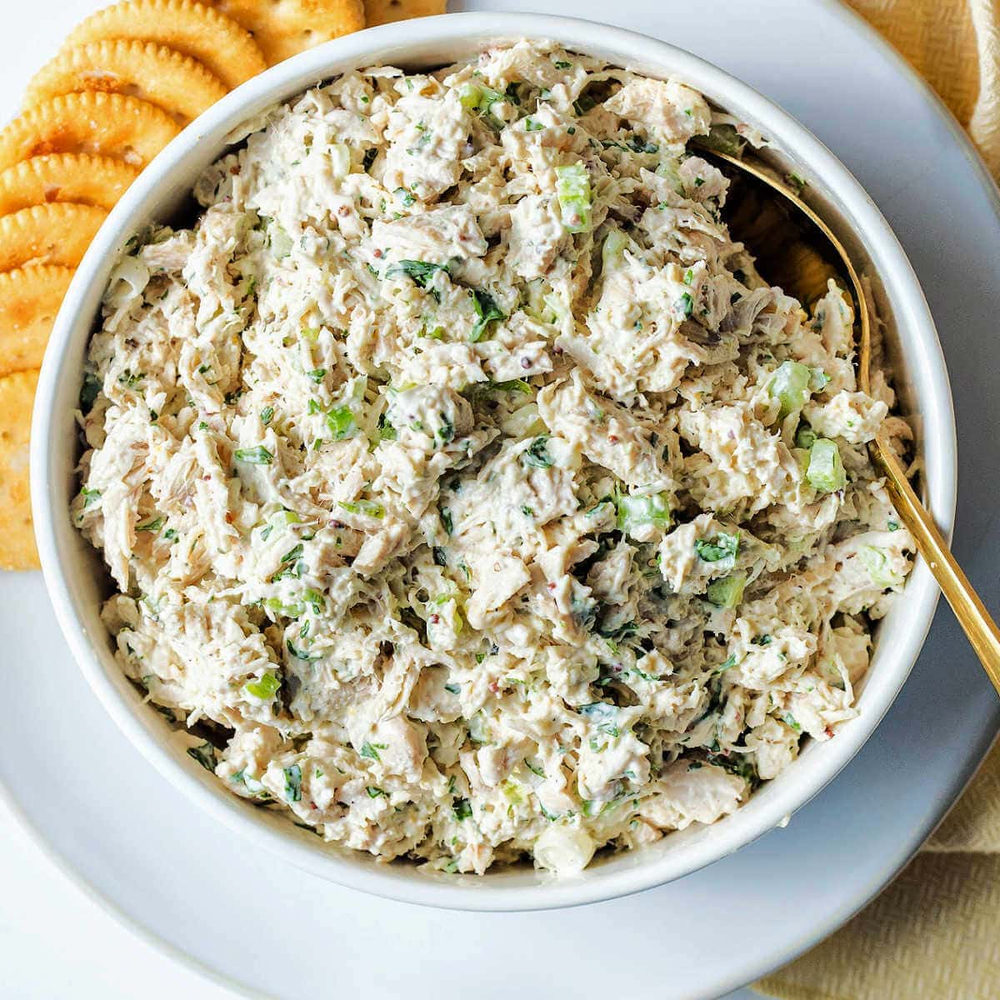

Chicken Salad

Description:
This is a recipe for Chicken Salad.
Chicken Salad is a Southern favorite and is great for hosting events.
There are many variations of Chicken Salad, but this is my favorite way to make it.
Chicken Salad isn't actually a salad in the normal sense of the word.
It is great on crackers, on bread a sandwich, or even rolled up in Romaine Lettuce as a light snack.
Follow along, and let's make some delicious Chicken Salad.
Ingredients:
- 1 pack of boneless / skinless chicken thighs
- 1 pack of chicken breast tenderloins
- 1 cup Mayonnaise
- 4 eggs
- 2 tsp salt
- 1 tsp black pepper
- 1/4 cup granulated sugar
- 1/2 Yellow or Vidalia Onion
- 2 tbsp yellow mustard
Steps:
- On the stove, place a large pot of water to boil.
- Once water has come to a boil, place chicken thighs, and breast tenderloins in water. Turn down to simmer.
- Place another medium pot of water on stove to boil.
- Once second pot of water is boiling, carefully place eggs in water, let boil for 20 minutes.
- After 20 minutes, move pot of eggs to sink, and run cold water in pot until all hot water is gone.
- Remove shell from Eggs. Pat dry eggs with paper towel.
- Remove chicken from stove, and drain water. Use hand chopper, and chop chicken to small shreds.
- Place eggs in chicken, and use hand chopper to chop eggs, mixing with chicken.
- Add Mayonnaise, Mustard, Salt, Pepper, and Sugar to mixture.
- Chop Onion, and put in mixture.
- Mix all ingredients together.
- Let cool to room temperature, or place in refrigerator to cool. Enjoy!